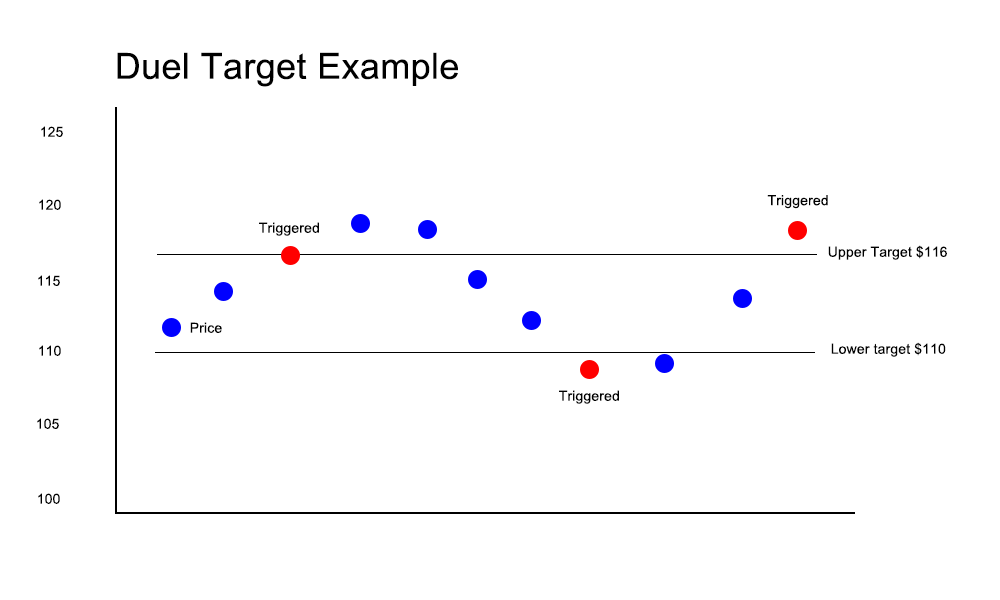
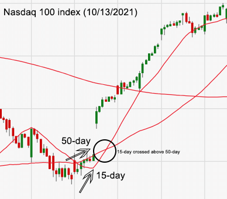

This alarm triggers when a stock price moves up by a specified dollar amount or percentage
Example: stock price is $100. Upper limit is set at $2.
An alarm will sound when the stock price meets or exceeds 102 then again at or above 104 and so on
This alarm triggers when a stock price moves down by a specified dollar amount or percentage
Example: stock price is $100. Lower limit is set at $2.
An alarm will sound when the stock price meets or exceeds 98 then again at or below 96 and so on
This alarm triggers when a stock price moves by a specified dollar amount or percentage in either direction.
Example: stock price is $100. Both Upper and Lower limits are set at $2.
An alarm will sound when the stock price meets or exceeds $102 or meets or drops below $98
This alarm measures a price or percent change in a single 24-hour period.
Unlike regular price/percent change alarms, the app saves the most recent price every 24-hours whether the limit is hit or not.
Example: a stock price is $100. An investor sets an upper limit of 2 dollars per share.
If the stock price, for example, moves up 1 dollar within a 24-hour period, the app saves $101 and uses it against the limits for the next 24-hour period such that the change in price must now reach at least $103 to send an alarm. This gives an investor a sense of how far a stock will move day-to-day.
If a dollar amount (or percentage) you set is NOT regularly sending alarms in a day, it may be an indication that your limits are set too high or low.
Just as it sounds, the price must hit or exceed a specified target price.
Example:the stock price is $100. An investor sets a target price of $110.
If the stock hits or exceeds $110, the alarm sounds. Likewise, if the stock price drops below $110, an alarm will sound.
Using a target alert, will allow an investor to 'see' the shape of a stock.

Trailing Alarms
This style alarm works best when you’ve already placed an order with your broker that has automatic buying or selling limits in place which execute if the stock dips or rises by a specified dollar amount or percentage change.
Volume Percent Change
This alarm triggers when the volume of a stock moves by specified percentage. When a limit is hit or exceeded, a message is sent with the volume percent change, the difference, and current price.
An increase in volume often precedes high volatility in a stock's price
Volume Percent Deviation
This alarm triggers when the volume of a stock deviates (above or below) by a set percentage from the 30-day average volume
Volume 24-hour Dip/Spike
This alarm triggers when the volume of a stock spikes or dips by a set percentage from the prior days closing volume.
Recurring Alarms
Recurring alarms, as you may have guessed, triggers at a set time or interval. The set time options are, every morning at 9:30 AM, every afternoon at 12:30 PM, or every evening at 4:00 PM.
Interval options are, every hour on the hour, every half hour, or, and if you’re particularly neurotic, every fifteen minutes.
Events - Earnings & Dividends
The alarm will trigger when a given event is at, or within, the following time periods: one month, one week, three days, or one day away from the given event
Example Apple earnings are to be posted in 10 days and you set a three-day alert. You will receive an alarm when the event is three days away.
Market Cap Percent Change
Market Capitalization is calculated by taking the number of shares in circulation and multiplying that by the share price.
Public companies are grouped based on their size — most commonly, small-cap, mid-cap and large-cap.
Significant changes in the value of the shares—either up or down—could impact Market Cap, as could changes in the number of shares issued.
This alarm triggers when the market cap moves up or down by a specified dollar amount or percentage.
Example: Market Cap is 500m. Upper limit is set at 1 percent.
An alarm will sound when the Market Cap meets or exceeds 505m
52-Week High/Low
This alarm can be set to compare the stock price against either the 52-week high or the 52-week low where the alarm will sound when the stock price either goes above or below.
Technicals
Death Cross
The Death Cross is a bearish pattern that occurs when the more short-term 50-day Simple Moving Average crosses below the long-term 200-day Simple Moving Average.
By selecting this alarm, an investor will be alerted of this occurrence.
Golden Cross
The Golden Cross is a bullish pattern that occurs when the more short-term 15-day Simple Moving Average crosses above the long-term 50-day Simple Moving Average.
By selecting this alarm, an investor will be alerted of this occurrence.
